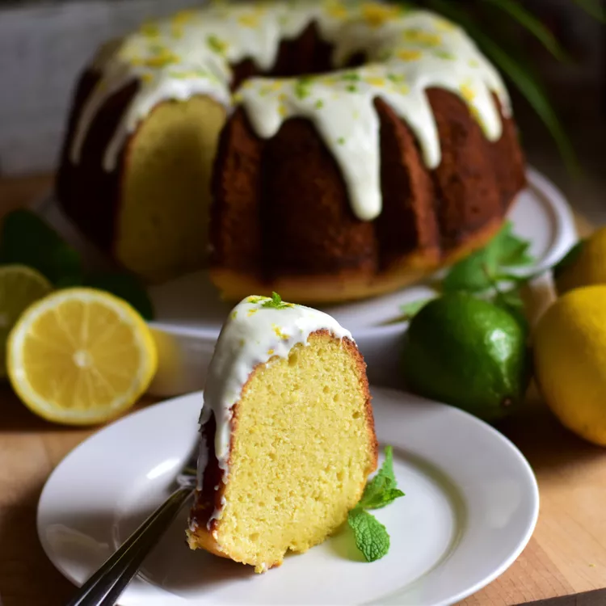

Lemon-Lime Ricotta Pound Cake

Description
A rich, dense, buttery pound cake, with hints of citrus, gets a flavor and texture boost from the addition of ricotta cheese. Pairing the cake with a bright, fresh, lemon-lime icing makes for a wonderful, and beautiful, dessert.
Ingredients
- 3 1/8 cups all-purpose flour
- 1/2 teaspoon baking soda
- 1/2 teaspoon salt
- 1/2 teaspoon ground cardamom
- 1/4 teaspoon ground ginger
- 2 cups whole-milk ricotta cheese
- 2 cups white sugar
- 1 cup unsalted butter
Steps
- Preheat the oven to 350 degrees F (175 degrees C). Grease and flour a 10-inch fluted tube pan
- Sift flour, baking soda, salt, cardamom, and ginger together in a large bowl. Set aside.
- Beat ricotta, sugar, and butter together in a separate large bowl on medium-high speed until mixture is very light, 7 to 9 minutes. Mixture will look almost grainy and curdled--that is normal. Add eggs, 1 at a time, mixing well after each addition. Beat mixture on high speed for another 3 to 4 minutes. Mix in lemon zest and juice and lime zest and juice, until thoroughly incorporated. Add dry ingredients in three separate additions, mixing until only just combined after each addition.
- Pour batter evenly into prepared pan and smooth the top. Tap pan on the counter a few times to remove any air bubbles.
- Bake in the preheated oven until a bamboo skewer inserted into the center of the cake comes out clean, 55 to 60 minutes. Cool cake in the pan for 15 minutes before gently running a knife around the edges and center of the pan to loosen. Invert cake onto a wire rack to cool completely.
- To make the icing: whisk together powdered sugar, heavy cream, and salt until completely smooth. Add in lemon and lime zests and juices and mix until thoroughly combined. Pour icing over the cooled cake.